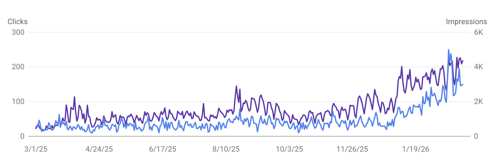
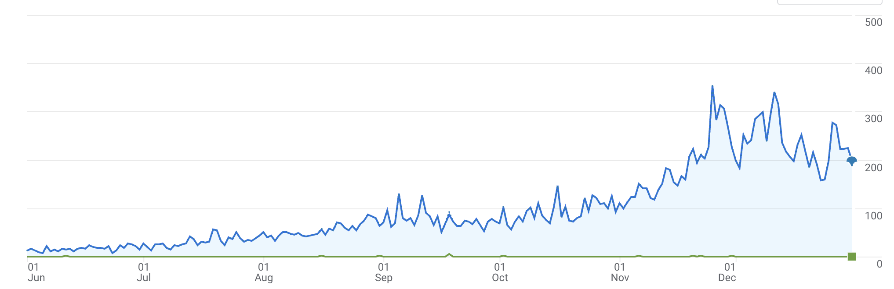

Ich helfe Schweizer KMUs, online gefunden zu werden – von Kunden, die genau jetzt nach Ihnen suchen. Spezialisiert. Messbar. Ohne Agentur-Overhead.
Kostenloses Erstgespräch anfragen →Ich kenne die lokalen Eigenheiten, Mitbewerber und Suchgewohnheiten im Schweizer Markt – kein Standardansatz aus Deutschland oder Österreich.
Ich bin SEO-Spezialist mit über 5 Jahren Erfahrung – mit Projekten aus verschiedenen Branchen, von der technischen Basis bis zur Content-Strategie.
Drei definierte Angebote, fixe Konditionen, keine versteckten Kosten – inklusive Umsetzung auf Ihrer Website.
Aus Kundenprojekten und eigenen Projekten: SEO funktioniert branchenübergreifend.
Gestartet bei 30 organischen Klicks täglich, in zwölf Monaten auf über 250 gesteigert. Ohne bezahlte Werbung.
März 2025 – Februar 2026
Organischer Traffic verdreifacht durch systematische On-Page Optimierung. Nachhaltig und ohne bezahlte Werbung.
On-Page SEOGestartet bei unter 30 Sessions täglich, in 7 Monaten auf über 300 gesteigert, aufgebaut und erfolgreich verkauft.
7 Monate
SEO (Search Engine Optimization) macht Ihre Website für Google besser auffindbar. Durch technische Optimierung, relevante Inhalte und den Aufbau von Autorität erscheint Ihre Website weiter oben in den Suchergebnissen, genau dann, wenn potenzielle Kunden nach Ihren Leistungen suchen.
Erste Verbesserungen sind oft nach 2–3 Monaten messbar, solide Ergebnisse nach 6–12 Monaten. SEO ist keine Schnelllösung, aber die Resultate sind nachhaltig und unabhängig von Werbebudgets.
GEO steht für Generative Engine Optimization, also die Optimierung für KI-Tools wie ChatGPT, Perplexity oder Google AI Overviews. Wer dort genannt wird, braucht dasselbe Fundament wie bei klassischem SEO: klare Inhalte, Autorität und technische Sauberkeit. Wer für Google optimiert ist, wird auch von KI-Tools gefunden.
Ich biete drei klare Pakete: SEO Audit (einmalig CHF 1'500), SEO Monitor (CHF 950/Monat) und SEO Growth (CHF 1'900/Monat). Wer unsicher ist, wo er steht, startet am besten mit dem Audit. Danach empfehle ich das passende Paket.
Ja. Social Media bringt Sichtbarkeit, solange Sie posten. SEO wirkt auch dann, wenn Sie schlafen. Wer auf Google gefunden wird, muss keine Reichweite kaufen. Beides ergänzt sich, aber SEO ist der nachhaltigere Kanal.
Kostenloses Erstgespräch – ich schaue mir Ihre Website an und sage Ihnen ehrlich, wo Potenzial liegt.
Jetzt anfragen →